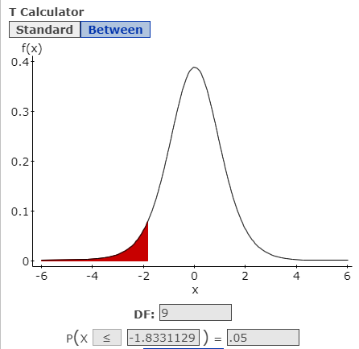
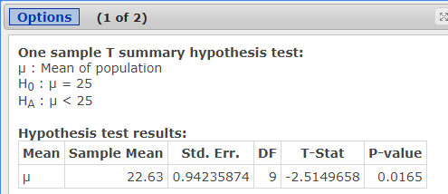
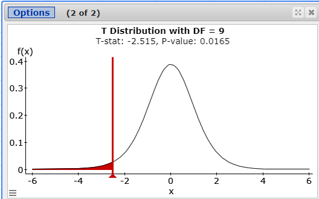
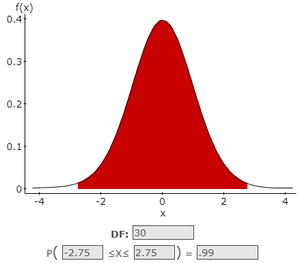
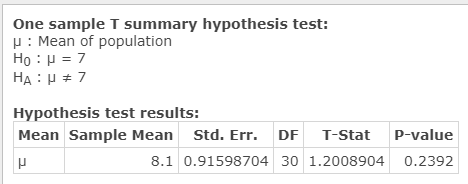
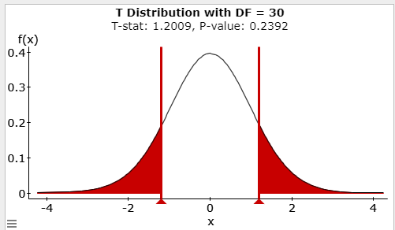
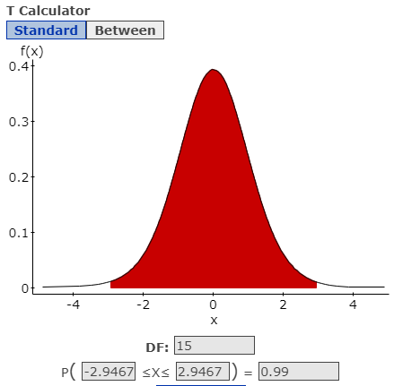
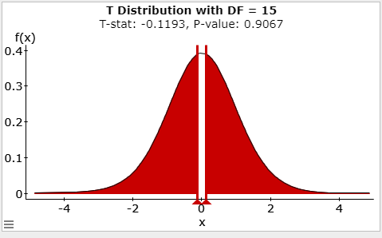
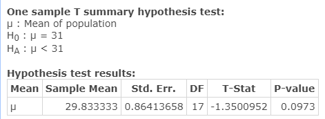
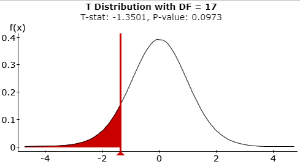

Unit 4 Hypothesis Testing
7.3 Hypothesis Testing for the Mean
Step 1: Identify Level of Significance and Degrees of Freedom
- Level of Significance: α
- Degrees of Freedom: n-1
Step 2: Identify Test Statistic for Mean Claim:
- n = sample size
- s = sample standard deviation
- Degrees of freedom: n -1
- \(\overline{x}\) = sample mean
- \(\mu\) = population mean
- \(t=\frac{\overline{x}-\mu_{\overline{x}}}{\frac{s}{\sqrt{n}}}\)
Step 3: Using the P-value to Evaluate the Null Hypothesis
Definition of P-value: The probability of being as extreme, or more extreme, than your data, assuming is correct.Step 4: Make a decision about the null hypothesis based on the P-value
- If P-value \(\leq \alpha\):
- reject \(H_0\)
- Type I error: rejecting \(H_0\) when it is actually true
- If P-value \(= \alpha\):
- fail to reject \(H_0\)
- Type II error: failing to reject \(H_0\) when it is actually false
Step 5: Formulate a Conclusion About the Claim
| Null is the Claim | Alternate is the Claim | |
|---|---|---|
| Reject the Null | “There is sufficien sample evidence to reject the claim that…” | “There is sufficient sample evidence to support the claim that…” |
| Fail to Reject the Null | “There is not sufficient sample evidence to reject the claim that…” | “There is not sufficient sample evidence to support the claim that…” |
- Changing a Tire: The length of time to change a tire is normally distributed. A random sample of ten tire changes is taken with a mean of 22.63 minutes and a standard deviation of 2.98 minutes. Use a 0.05 significance level to test the claim that the mean time to change a tire is less than 25 minutes.
- Design the Study
- The original Claim:
\(\mu < 25\) - \(H_0\):
\(\mu \geq 25\) assume \(H_0\):\(\mu = 25\) - \(H_A\):
\(\mu < 25\) - Type of Test:
Left-tailed test - Level of Significance:
\(\alpha =.05\) - Degrees of Freedon:
\(10-1=9\) - Critical Value(s):
\(t=-1.8331\) Determines shaded area(s)

- The original Claim:
- Results
- Test Statistic: A standardized value based on the sample data, assuming the null is true.
\(t=\frac{\overline{x}-\mu}{\left(\frac{s}{\sqrt{n}}\right)}=\frac{22.63-25}{\left(\frac{2.98}{\sqrt{10}}\right)}=-2.5150\)
- p-value:
0.165 - Rejection Criteria: Reject \(H_0\) if
p value \(< \alpha\) and the test statistic (t) is in the rejection region. - Decision about the null:
Reject \(H_0\) Reason 1: 0.0165 < .05
Reason 2: -2.5150 is in the rejection region
- Concluding statement about the claim:
There is sufficient evidence to support the claim the mean time to change a tire is less than 25 minutes.


- Test Statistic: A standardized value based on the sample data, assuming the null is true.
- Design the Study
- Age of Cars: The mean age of cars driven by Pellissippi State students is seven years. The Dean of Students claims that this is an accurate statement for his students. A random sample of 31 cars in the East Parking Lot on campus showed a mean age of 8.1 years with a standard deviation of 5.1 years. Test the Dean’s claim at the 0.01 significance level.
- Design the Study
- The original Claim:
\(\mu = 7\) - \(H_0\):
\(\mu = 7\) assume \(H_0\):\(\mu = 7\) - \(H_A\):
\(\mu \neq 7\) - Type of Test:
Two-tailed test - Level of Significance:
\(\alpha =.01\) - Degrees of Freedon:
\(31-1=30\) - Critical Value(s):
\(t=\pm 2.750\) Determines shaded area(s)

- The original Claim:
- Results
- Test Statistic: A standardized value based on the sample data, assuming the null is true.
\(\mathrm{t}=\frac{\overline{x}-\mu}{\left(\frac{s}{\sqrt{n}}\right)}=\frac{8.1-7}{\left(\frac{5.1}{\sqrt{31}}\right)}=1.20089\)
- p-value:
0.2392 - Rejection Criteria: Reject \(H_0\) if
p value \(< \alpha\) and the test statistic (t) is in the rejection region. - Decision about the null:
Fail to reject \(H_0\) Reason 1: 0.2392 > .01
Reason 2: 1.20089 is not in the rejection region
- Concluding statement about the claim:
There is not sufficient evidence to reject the claim the mean age of cars driven by PSCC students is 7 years.


- Test Statistic: A standardized value based on the sample data, assuming the null is true.
- Design the Study
- Sugars in Cereal: In a sample of 16 cereals, the mean sugar content was measured at .295g and the standard deviation was .1677g. Use a .01 significance level to test the claim the true population mean sugar content (grams of sugar per gram of cereal) for all cereals is equal to 0.3g.
- Design the Study
- The original Claim:
\(\mu = 0.3\) - \(H_0\):
\(\mu = 0.3\) assume \(H_0\):\(\mu = 0.3\) - \(H_A\):
\(\mu \neq 0.3\) - Type of Test:
Two-tailed test - Level of Significance:
\(\alpha =0.01\) - Degrees of Freedon:
\(16-1=15\) - Critical Value(s):
\(t=\pm 2.947\) Determines shaded area(s)

- The original Claim:
- Results
- Test Statistic: A standardized value based on the sample data, assuming the null is true.
\(t= \frac{\overline{x}-\mu}{\left(\frac{s}{\sqrt{n}}\right)} = \frac{.295-.3}{\left(\frac{.1677}{\sqrt{16}}\right)} =-0.1193\)
- p-value:
0.9067 - Rejection Criteria: Reject \(H_0\) if
p value \(< \alpha\) and the test statistic (t) is in the rejection region. - Decision about the null:
Fail to reject \(H_0\) Reason 1: 0.9067 > .01
Reason 2: -0.1193 is not in the rejection region
- Concluding statement about the claim:
There is not sufficient evidence to reject the claim the true mean sugar content for all cereals is equal to 0.3g.


- Test Statistic: A standardized value based on the sample data, assuming the null is true.
- Design the Study
- Class Size: You receive a brochure from a large university. The brochure indicates that the mean class size for full-time faculty is fewer than 31 students. You want to test this claim. You randomly select 18 classes taught by full-time faculty and determine the class size of each. The results are shown in the table below. At a 0.01 significance level, can you support the university’s claim?
34 26 28 33 32 37 28 25 29 26 28 37 30 31 25 29 31 28
Sample Statistics: \(\overline{x}=29.8333333 \quad s=3.666221 \quad n=18\)
- Design the Study
- The original Claim:
\(\mu < 31\) - \(H_0\):
\(\mu \geq 31\) assume \(H_0\):\(\mu = 31\) - \(H_A\):
\(\mu < 31\) - Type of Test:
Left-tailed test - Level of Significance:
\(\alpha =0.01\) - Degrees of Freedon:
\(18-1=17\) - Critical Value(s):
\(t=-2.5669\) Determines shaded area(s)

- The original Claim:
- Results
- Test Statistic: A standardized value based on the sample data, assuming the null is true.
\(t =\frac{\overline{x}-\mu}{\left(\frac{s}{\sqrt{n}}\right)} = \frac{29.833333-31}{\left(\frac{3.66621}{\sqrt{18}}\right)}=-1.3501\)
- p-value:
0.0973 - Rejection Criteria: Reject \(H_0\) if
p value \(< \alpha\) and the test statistic (t) is in the rejection region. - Decision about the null:
Fail to reject \(H_0\) Reason 1: 0.0973 > .01
Reason 2: -1.3051 is not in the rejection region
- Concluding statement about the claim:
There is not sufficient evidence to support the claim the mean class size for full time faculty is fewer than 31 students.


- Test Statistic: A standardized value based on the sample data, assuming the null is true.
- Design the Study